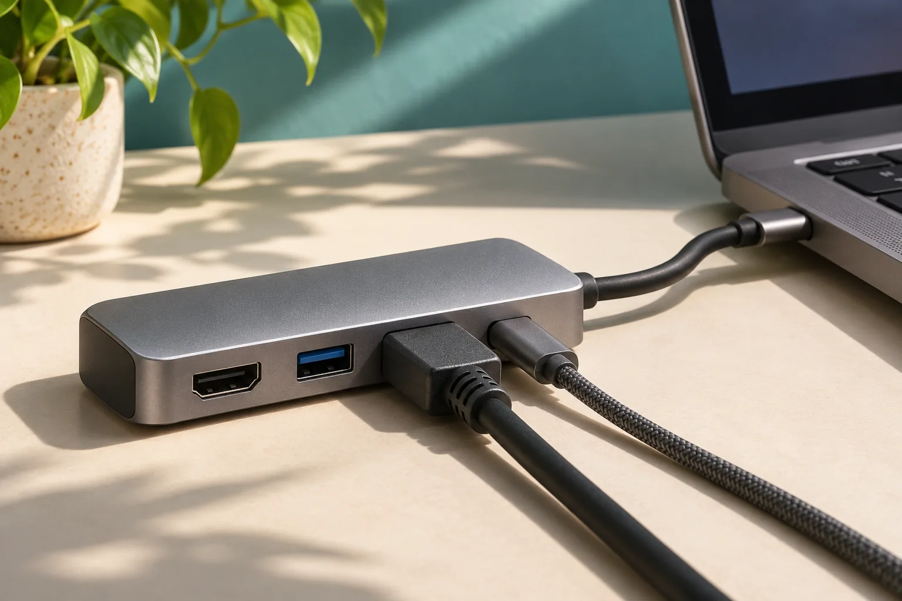

Mua hub theo cổng thật sự cần
Hai bộ hub có cùng hình dáng có thể hỗ trợ khác nhau về hình ảnh, sạc và tốc độ. Hãy ghi nhu cầu theo thiết bị cần gắn trước khi nhìn số cổng.

Liệt kê hai tác vụ ưu tiên
Ví dụ cần màn hình ngoài và một ổ lưu trữ chép ảnh. Xác định máy chủ có hỗ trợ xuất hình qua đúng cổng hay không, rồi xem cổng nào trên hub thực hiện chức năng đó. Đừng suy ra khả năng xuất hình chỉ vì hai đầu cắm nhìn giống nhau.
Kiểm tra khả năng dùng đồng thời
Mang bộ sạc, dây và màn hình mà bạn sẽ dùng nếu có điều kiện thử. Chép một tệp lớn trong lúc màn hình đang hoạt động và kiểm tra máy có nhận sạc. Quan sát hiện tượng mất kết nối khi thiết bị vừa ngủ dậy.
Xem cách thiết bị nằm trên bàn
Dây quá ngắn có thể treo hub trên cổng, tạo lực kéo khi gắn nhiều dây. Chọn vị trí để hub nằm yên và thoát nhiệt. Nếu chỉ cần thêm một cổng trong vài tháng, so sánh chi phí đầu chuyển đơn với bộ nhiều cổng trước khi mua.